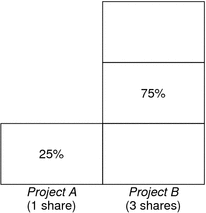
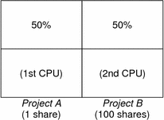
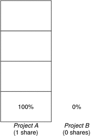

Previous
Previous
CPU Share Examples
Assume you have a system with two CPUs running two parallel CPU-bound workloads called A and B, respectively. Each workload is running as a separate project. The projects have been configured so that project A is assigned SA shares, and project B is assigned SB shares.
On average, under the traditional TS scheduler, each of the workloads that is running on the system would be given the same amount of CPU resources. Each workload would get 50 percent of the system's capacity.
When run under the control of the FSS scheduler with SA=SB, these projects are also given approximately the same amounts of CPU resources. However, if the projects are given different numbers of shares, their CPU resource allocations are different.
The next three examples illustrate how shares work in different configurations. These examples show that shares are only mathematically accurate for representing the usage if demand meets or exceeds available resources.
Example 1: Two CPU-Bound Processes in Each Project
If A and B each have two CPU-bound processes, and SA = 1 and SB = 3, then the total number of shares is 1 + 3 = 4. In this configuration, given sufficient CPU demand, projects A and B are allocated 25 percent and 75 percent of CPU resources, respectively.
Example 2: No Competition Between Projects
If A and B have only one CPU-bound process each, and SA = 1 and SB = 100, then the total number of shares is 101. Each project cannot use more than one CPU because each project has only one running process. Because no competition exists between projects for CPU resources in this configuration, projects A and B are each allocated 50 percent of all CPU resources. In this configuration, CPU share values are irrelevant. The projects' allocations would be the same (50/50), even if both projects were assigned zero shares.
Example 3: One Project Unable to Run
If A and B have two CPU-bound processes each, and project A is given 1 share and project B is given 0 shares, then project B is not allocated any CPU resources and project A is allocated all CPU resources. Processes in B always run at system priority 0, so they will never be able to run because processes in project A always have higher priorities.
FSS Configuration
Projects and Users
Projects are the workload containers in the FSS scheduler. Groups of users who are assigned to a project are treated as single controllable blocks. Note that you can create a project with its own number of shares for an individual user.
Users can be members of multiple projects that have different numbers of shares assigned. By moving processes from one project to another project, processes can be assigned CPU resources in varying amounts.
For more information on the project(4) database and name services, see project Database.
CPU Shares Configuration
The configuration of CPU shares is managed by the name service as a property of the project database.
When the first task (or process) that is associated with a project is created through the setproject(3PROJECT) library function, the number of CPU shares defined as resource control project.cpu-shares in the project database is passed to the kernel. A project that does not have the project.cpu-shares resource control defined is assigned one share.
In the following example, this entry in the /etc/project file sets the number of shares for project x-files to 5:
x-files:100::::project.cpu-shares=(privileged,5,none)
If you alter the number of CPU shares allocated to a project in the database when processes are already running, the number of shares for that project will not be modified at that point. The project must be restarted for the change to become effective.
If you want to temporarily change the number of shares assigned to a project without altering the project's attributes in the project database, use the prctl command. For example, to change the value of project x-files's project.cpu-shares resource control to 3 while processes associated with that project are running, type the following:
# prctl -r -n project.cpu-shares -v 3 -i project x-files
See the prctl(1) man page for more information.
- -r
Replaces the current value for the named resource control.
- -n name
Specifies the name of the resource control.
- -v val
Specifies the value for the resource control.
- -i idtype
Specifies the ID type of the next argument.
- x-files
Specifies the object of the change. In this instance, project x-files is the object.
Project system with project ID 0 includes all system daemons that are started by the boot-time initialization scripts. system can be viewed as a project with an unlimited number of shares. This means that system is always scheduled first, regardless of how many shares have been given to other projects. If you do not want the system project to have unlimited shares, you can specify a number of shares for this project in the project database.
As stated previously, processes that belong to projects with zero shares are always given zero system priority. Projects with one or more shares are running with priorities one and higher. Thus, projects with zero shares are only scheduled when CPU resources are available that are not requested by a nonzero share project.
The maximum number of shares that can be assigned to one project is 65535.